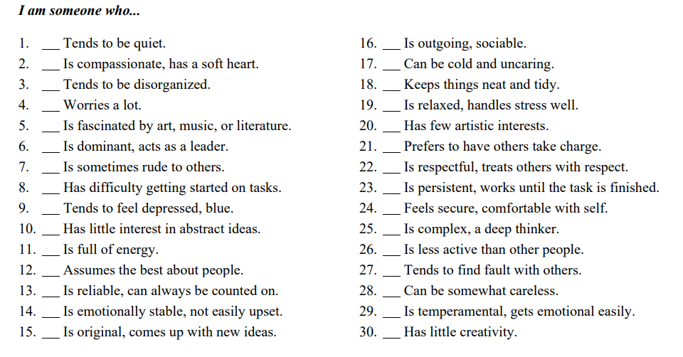

Do LLMs have Personality?
Spring 2025 CSCI 5541 NLP: Class Project - University of Minnesota
Nvidia and Chill
Vaibhav Jain
Vaibhav Jain
This project explores how different Large Language Models (LLMs) respond to the same personality questionnaire (the Big Five Inventory Short Form, BFI-2-S) when prompted to answer as if they belong to specific demographic profiles. By comparing model outputs, we can observe how demographic context might shape the perceived personality traits. The findings demonstrate variability in how each model “interprets” demographic cues, opening the door for future research into model biases, controllable text generation, and personalization.
A figure that conveys the main idea behind the project or the main application being addressed. This figure is from StyLEx.

If you need to explain more about your figure
What did you try to do? What problem did you try to solve? Articulate your objectives using absolutely no jargon.
With the rapid growth of open-source LLMs, researchers and practitioners alike are keenly interested in how these models adapt their responses based on user or persona prompts. Personality questionnaires such as the Big Five Inventory–2 Short Form (BFI-2-S) offer a standardized way to measure or simulate personality attributes (e.g., Extraversion, Agreeableness, Conscientiousness, Negative Emotionality, and Open-Mindedness).
Recent work has shown that large language models may display systematic differences in responses when given demographic or identity prompts. These differences are relevant for many applications, including personalized education, mental health, recommendation systems, and more. Our goal here is to investigate whether a given LLM’s responses to a well-known personality inventory vary in a predictable manner when it is asked to “adopt” different demographic backgrounds.
1. Demographic Profiles We created 10 distinct demographic profiles, each specifying age, gender, occupation, and country of residence:
2. BFI-2-S 30-Item Questionnaire
We used the following statements exactly as provided. Each is rated on a scale from 1 (Strongly Disagree) to 5 (Strongly Agree), starting with “I am someone who..."

How did you measure success? What experiments were used? What were the results, both quantitative and qualitative? Did you succeed? Did you fail? Why?
Nemo enim ipsam voluptatem quia voluptas sit aspernatur aut odit aut fugit, sed quia consequuntur magni dolores eos qui ratione voluptatem sequi nesciunt.
| Experiment | 1 | 2 | 3 |
|---|---|---|---|
| Sentence | Example 1 | Example 2 | Example 3 |
| Errors | error A, error B, error C | error C | error B |

How easily are your results able to be reproduced by others? Did your dataset or annotation affect other people's choice of research or development projects to undertake? Does your work have potential harm or risk to our society? What kinds? If so, how can you address them? What limitations does your model have? How can you extend your work for future research?